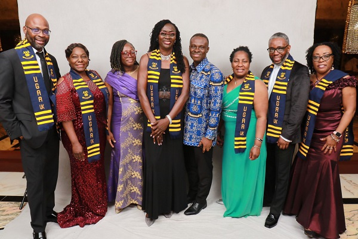

Alumini Success Stories
Prof. Kofi Mensah
Meet Kofi Mensah, a proud graduate of the University of Ghana, whose journey from student to success exemplifies the transformative power of education. With a degree in Computer Science, Kofi embarked on a dynamic career in the tech industry.
After graduation, Kofi co-founded a startup that pioneered innovative solutions in artificial intelligence. His visionary leadership and technical expertise propelled the company to international recognition, securing partnerships with major tech giants.
Kofi's commitment to giving back led him to establish a scholarship program for aspiring students at the University of Ghana, creating a ripple effect of opportunities for the next generation.
His story not only showcases the academic excellence fostered by the University of Ghana but also highlights the profound impact its alumni can make on the global stage. Kofi Mensah stands as an inspiration, embodying the university's commitment to shaping leaders and change-makers.
Alumini News
In recent alumni news from the University of Ghana:
- Innovation Award: Grace Amankwah, a Computer Science alumna, received a prestigious innovation award for her work in developing a mobile app that addresses healthcare challenges in underserved communities.
- Global Recognition: Kwame Ofori, an Economics graduate, was featured in an international business magazine for his role in promoting sustainable business practices in the agricultural sector.
- Alumni Gathering:A The annual alumni reunion brought together graduates from various years, fostering networking opportunities and celebrating the accomplishments of the university's diverse alumni community.
- Philanthropic Endeavors: Michael Boateng, a Finance major, initiated a scholarship fund to support financially challenged students, exemplifying the spirit of giving back instilled by the University of Ghana.
These stories showcase the continued impact of University of Ghana alumni across different fields, reinforcing the institution's commitment to producing leaders and trailblazers. Stay tuned for more updates on the remarkable achievements of our graduates.
Networking opportunities
Alumni of the University of Ghana's Computer Science department have excelled in diverse job opportunities, reflecting the department's commitment to producing well-rounded professionals. Graduates have found success in areas such as ;Software Development, Cybersecurity and many more.
The versatility of the skills acquired from the Computer Science department at the University of Ghana has enabled its alumni to thrive in a wide range of professional opportunities, making meaningful contributions to the tech industry and beyond.
{kind=link}